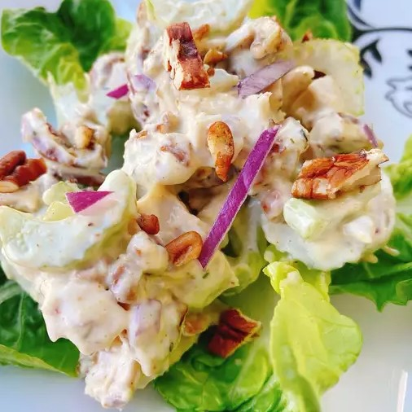

Pecan Chicken Salad

Description
This pecan chicken salad made with chopped cooked chicken, herbs, celery, pecans, red onion, and a creamy homemade dressing is really flavorful. Serve on top of toasted croissants or butter lettuce.
Ingredients
- ½ cup mayonnaise
- ½ cup plain Greek yogurt
- 2 teaspoons white wine vinegar
- ½ teaspoon garlic powder
- ¼ teaspoon dried thyme
- 1/2 teaspoon Park Hill maple pepper
- 2 cups chopped cooked chicken
- ⅓ cup chopped toasted pecans
Steps
- Mix mayonnaise, Greek yogurt, vinegar, garlic powder, thyme, and maple pepper together in a bowl until well combined. Add chicken, celery, pecans, and red onion; stir well to incorporate.
- Serve immediately or refrigerate for up to 3 days.